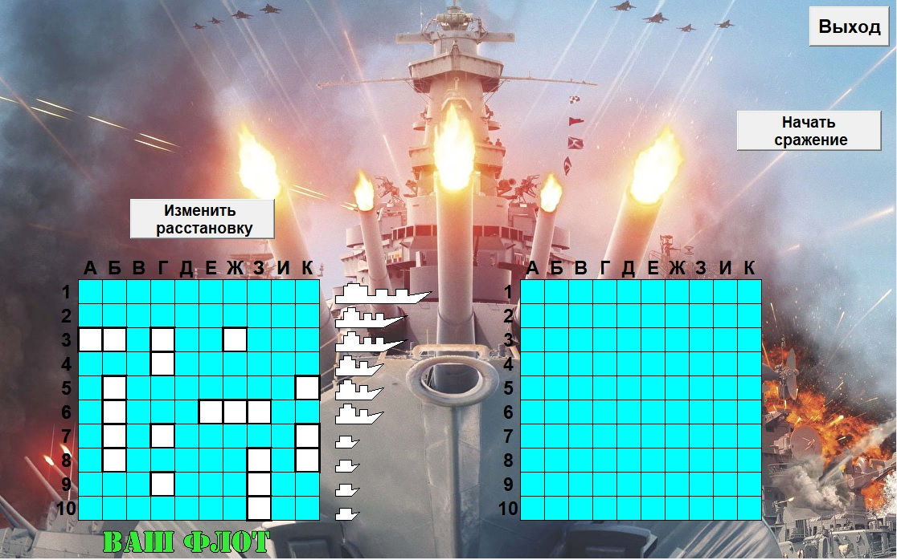
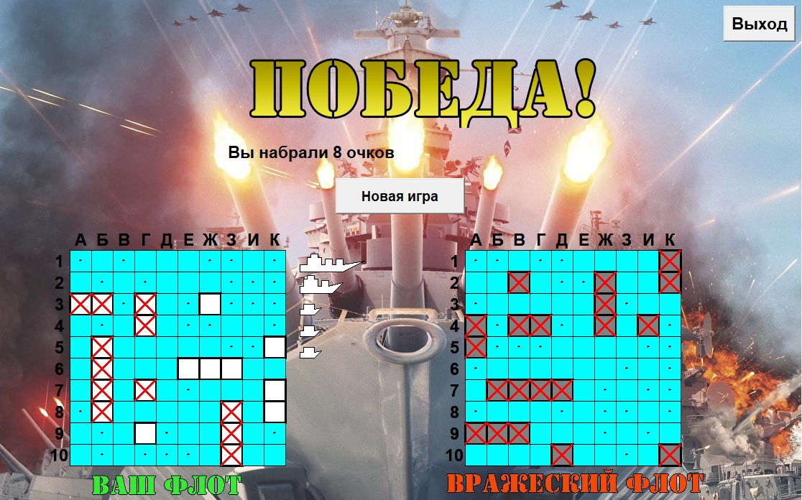

Игра по традиционным правилам из детства.
Игра происходит на поле размером 10 на 10 клеток. Игрок располагает свои корабли, затем
те же действия производит оппонент. При этом расположение своего флота игрок видит сразу,
а корабли противника необходимо вычислить и подбить в ходе сражения.
Цель игры- потопить корабли противника раньше, чем он потопит корабли игрока.
При запуске, игрок попадает на стартовый экран, где можно выбрать настройки.
Игра по традиционным правилам из детства.
Игра происходит на поле размером 10 на 10 клеток. Игрок располагает свои корабли, затем
те же действия производит оппонент. При этом расположение своего флота игрок видит сразу,
а корабли противника необходимо вычислить и подбить в ходе сражения.
Цель игры- потопить корабли противника раньше, чем он потопит корабли игрока.
При запуске, игрок попадает на стартовый экран, где можно выбрать настройки.  В начале игры игроку предлагается расставить свои корабли (один 4-палубный, два 3-палубных, три 2-палубных и четыре 1-палубных) согласно определенным правилам: Все корабли располагаются прямо, без изгибов. Корабли не могут располагаться в соседних клетках ни по горизонтали, ни по вертикали, ни по диагонали. Расстановка происходит автоматически при нажатии на кнопку. При необходимости расстановку кораблей можно поменять.
 После расстановки кораблей, игрок получает право первого хода и может
"произвести выстрел" по любой выбранной незанятой клетке поля. В случае попадания, клетка помечается крестом и
ход игрока продолжается. В случае промаха- клетка помечается точкой и ход передается оппоненту.
Если вражеский корабль, по которому попал игрок, имеет еще целые палубы(клетки), то он считается "раненым",
Если же целых палуб не остается, то этот корабль "убит", помечается соответственно и выбывает из игры.
После расстановки кораблей, игрок получает право первого хода и может
"произвести выстрел" по любой выбранной незанятой клетке поля. В случае попадания, клетка помечается крестом и
ход игрока продолжается. В случае промаха- клетка помечается точкой и ход передается оппоненту.
Если вражеский корабль, по которому попал игрок, имеет еще целые палубы(клетки), то он считается "раненым",
Если же целых палуб не остается, то этот корабль "убит", помечается соответственно и выбывает из игры. Игра считается завершенной когда у игрока или его оппонента заканчиваются корабли. (раненый корабль считается еще участвующим в сражении, пока его не убили окончательно). В случае, когда игрок убил все корабли противника- он считается победителем. В противоположной ситуации- проигравшим. В конце сражения на экран выводится информация о набранном количестве очков(в случае победы игрока). В случае проигрыша- очки не начисляются
 Labirint. Мини-РПГ-игра с прокачкой, поиском сокровищ, сражениями с врагами.
Labirint. Мини-РПГ-игра с прокачкой, поиском сокровищ, сражениями с врагами. Black-Jack. Карточная игра по традиционным правилам с зарабатыванием денег и топ-листом.
Black-Jack. Карточная игра по традиционным правилам с зарабатыванием денег и топ-листом. Викторина с разными темами и случайной комбинацией вопросов и подсчетом очков в финале
Викторина с разными темами и случайной комбинацией вопросов и подсчетом очков в финале